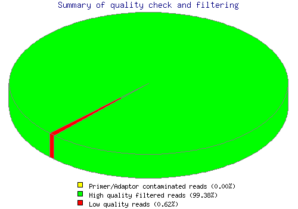
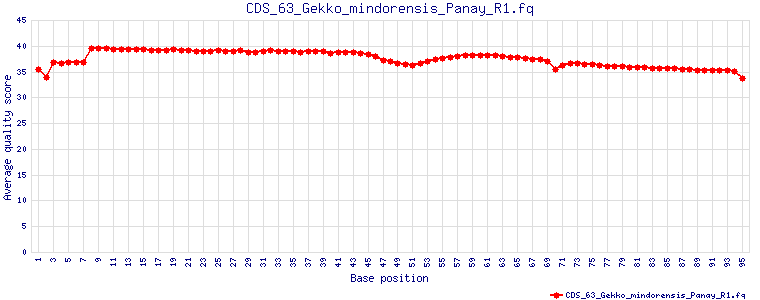
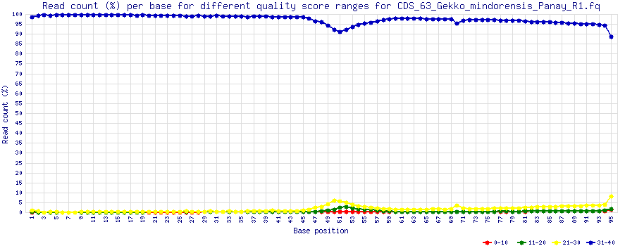
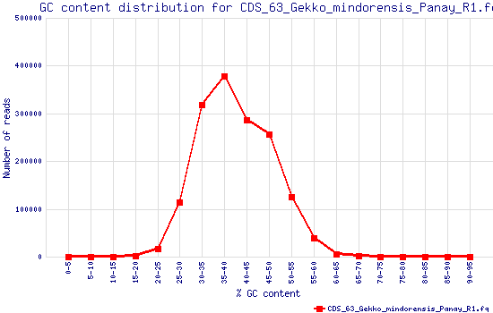
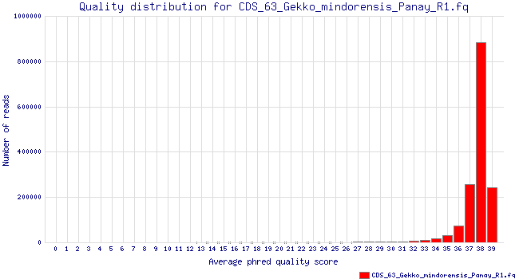
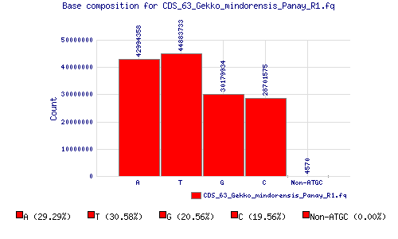

| Results of quality control (QC) using IlluQC.pl v2.3
(Wed Mar 26, 2014) |
| Input files and parameters: |
|
|
| Output files: |
|
|
| |
| Results of QC |
| QC statistics |
| File name | CDS_63_Gekko_mindorensis_Panay_R1.fq |
| Total number of reads | 1544886 |
| Total number of HQ reads | 1535357 |
| Percentage of HQ reads | 99.38% |
| Total number of bases | 146764170 |
| Total number of bases in HQ reads | 145858915 |
| Total number of HQ bases in HQ reads | 145087161 |
| Percentage of HQ bases in HQ reads | 99.47% |
| Number of Primer/Adaptor contaminated HQ reads | NA |
| Total number of HQ filtered reads | 1535357 |
| Percentage of HQ filtered reads | 99.38% |
|
| Detailed QC statistics |
| File name | CDS_63_Gekko_mindorensis_Panay_R1.fq |
| Minimum read length | 95 |
| Maximum read length | 95 |
| Average read length | 95.00 |
| Total number of reads | 1544886 |
| Total number of reads with non-ATGC bases | 684 |
| Percentage of reads with non-ATGC bases | 0.04% |
| Total number of bases | 146764170 |
| Total number of HQ bases | 145553773 |
| Percentage of HQ bases | 99.18% |
| Total number of non-ATGC bases | 4570 |
| Percentage of non-ATGC bases | 0.00% |
|
| Summary of QC |
Following pie chart shows the summary of QC depicting percentage of high quality, low quality and contaminated reads. |

(A) |
|
| Per base average quality scores |
Following graph(s) show per base average PHRED quality scores for input file, CDS_63_Gekko_mindorensis_Panay_R1.fq(A), before QC. |

(A)
|
|
| Read count (%) per base for different quality score ranges |
Following graph(s) show per base read count (%) for different quality score ranges for input file, CDS_63_Gekko_mindorensis_Panay_R1.fq(A), before QC. |

(A)
|
|
| GC content distribution |
Following graph(s) show number of reads for distinct average GC content (%) ranges for input file, CDS_63_Gekko_mindorensis_Panay_R1.fq(A), before QC. |

(A)
|
|
| Quality distribution |
Following graph(s) show number of reads for different average PHRED quality scores for input file, CDS_63_Gekko_mindorensis_Panay_R1.fq(A), before QC. |

(A)
|
|
| Base composition |
Following graph(s) show base composition (count) for input file, CDS_63_Gekko_mindorensis_Panay_R1.fq(A), before QC with percentage of bases at the bottom. |

(A)
|
|